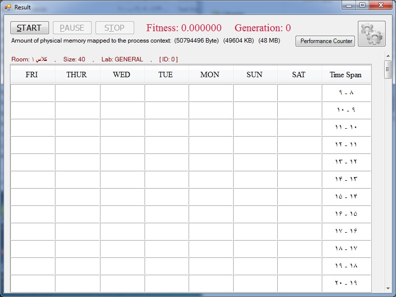
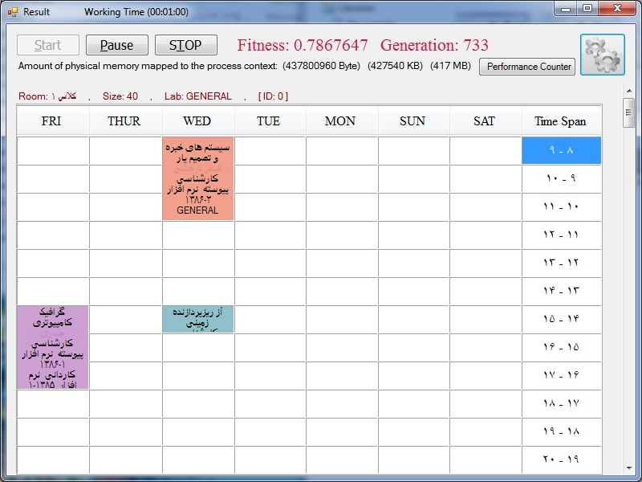
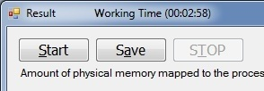

In first, value of G.A Fitness is zero. but after running
the G.A this value will increase and closed to number 1 (best fitness).
* G.A is acronym of Genetic
Algorithm.
By increasing number of algorithm generation, you'll see
that fitness value's of the results obtained in the case that an optimal
approaches (Best Fitness = 1)
.

* In Result forms, classification and distributing
data on the rooms are
done.
* Under Start buttons, shows the amount of main memory
consumption in every
time.
For start the solving problem process please click on
Start button to running
algorithm.

* You can see the solving problem steps as the
graphical and real time. To change this feature, see Tools and
Setting .
.
After running G.A you can get the process suspended or stopped. But for change class schedule data or show it,
first save or checked the "Save classroom data when the Algorithm state is
Stopped" item, in Tools and Setting form. For save the solution after stopping
process by the stop button, you can see the pause button change to save
button:

Then click on "Save" that this operation can
do.